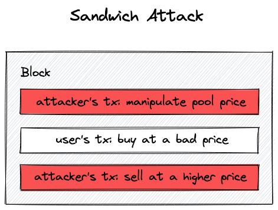

滑点保护
滑点是去中心化交易所中一个非常重要的问题。滑点简单来说就是你在发起交易时屏幕上看到的价格与实际执行交换时的价格之间的差异。这种差异出现是因为从你发送交易到交易被挖矿之间存在短暂（有时会很长，取决于网络拥堵和gas成本）的延迟。用更专业的术语来说，区块链状态每个区块都在变化，无法保证你的交易会在特定区块被应用。
滑点保护解决的另一个重要问题是三明治攻击——这是对去中心化交易所用户的一种常见攻击类型。在三明治攻击中，攻击者用他们的两笔交易"包裹"你的交换交易：一笔在你的交易之前，另一笔在之后。在第一笔交易中，攻击者修改池子的状态，使你的交换对你非常不利，而对攻击者略有利。这是通过调整池子流动性来实现的，使你的交易以较低的价格发生。在第二笔交易中，攻击者恢复池子流动性和价格。结果，由于价格被操纵，你获得的代币远少于预期，而攻击者获得一些利润。

去中心化交易所实现滑点保护的方式是让用户选择实际价格允许下降的幅度。默认情况下，Uniswap V3将滑点容忍度设置为0.1%，这意味着只有当执行时的价格不低于用户在浏览器中看到价格的99.9%时，交换才会执行。这是一个非常紧密的范围，用户可以调整这个数字，这在波动性较高时很有用。
让我们在我们的实现中添加滑点保护！
交换中的滑点保护
为了保护交换，我们需要在swap函数中添加一个参数——我们想让用户选择一个停止价格，即交换将停止的价格。我们将这个参数称为sqrtPriceLimitX96：
function swap(
address recipient,
bool zeroForOne,
uint256 amountSpecified,
uint160 sqrtPriceLimitX96,
bytes calldata data
) public returns (int256 amount0, int256 amount1) {
...
if (
zeroForOne
? sqrtPriceLimitX96 > slot0_.sqrtPriceX96 ||
sqrtPriceLimitX96 < TickMath.MIN_SQRT_RATIO
: sqrtPriceLimitX96 < slot0_.sqrtPriceX96 &&
sqrtPriceLimitX96 > TickMath.MAX_SQRT_RATIO
) revert InvalidPriceLimit();
...
当出售代币（zeroForOne为真）时，sqrtPriceLimitX96必须在当前价格和最小之间，因为出售代币会使价格下降。同样，当出售代币时，sqrtPriceLimitX96必须在当前价格和最大之间，因为价格会上升。
在while循环中，我们希望满足两个条件：完整的交换金额尚未填满，且当前价格不等于sqrtPriceLimitX96：
..
while (
state.amountSpecifiedRemaining > 0 &&
state.sqrtPriceX96 != sqrtPriceLimitX96
) {
...
这意味着Uniswap V3池在达到滑点容忍度时不会失败，而是简单地部分执行交换。
我们需要考虑sqrtPriceLimitX96的另一个地方是在调用SwapMath.computeSwapStep时：
(state.sqrtPriceX96, step.amountIn, step.amountOut) = SwapMath
.computeSwapStep(
state.sqrtPriceX96,
(
zeroForOne
? step.sqrtPriceNextX96 < sqrtPriceLimitX96
: step.sqrtPriceNextX96 > sqrtPriceLimitX96
)
? sqrtPriceLimitX96
: step.sqrtPriceNextX96,
state.liquidity,
state.amountSpecifiedRemaining
);
在这里，我们希望确保computeSwapStep永远不会计算超出sqrtPriceLimitX96范围的交换金额——这保证了当前价格永远不会越过限制价格。
添加流动性时的滑点保护
添加流动性也需要滑点保护。这源于添加流动性时不能改变价格（流动性必须与当前价格成比例），因此流动性提供者也会遭受滑点。然而，与swap函数不同，我们不必在Pool合约中实现滑点保护——回想一下，Pool合约是一个核心合约，我们不想在其中放入不必要的逻辑。这就是我们创建Manager合约的原因，我们将在Manager合约中实现滑点保护。
Manager合约是一个包装合约，使对Pool合约的调用更加方便。要在mint函数中实现滑点保护，我们可以简单地检查Pool所取的代币数量，并将其与用户选择的一些最小数量进行比较。此外，我们可以让用户不必计算和以及流动性，而是在Manager.mint()中计算这些值。
我们更新后的mint函数现在将接受更多参数，所以让我们将它们分组到一个结构体中：
// src/UniswapV3Manager.sol
contract UniswapV3Manager {
struct MintParams {
address poolAddress;
int24 lowerTick;
int24 upperTick;
uint256 amount0Desired;
uint256 amount1Desired;
uint256 amount0Min;
uint256 amount1Min;
}
function mint(MintParams calldata params)
public
returns (uint256 amount0, uint256 amount1)
{
...
amount0Min和amount1Min是基于滑点容忍度计算的数量。它们必须小于期望数量，其间隔由滑点容忍度设置控制。流动性提供者期望提供不小于amount0Min和amount1Min的数量。
接下来，我们计算、和流动性：
...
IUniswapV3Pool pool = IUniswapV3Pool(params.poolAddress);
(uint160 sqrtPriceX96, ) = pool.slot0();
uint160 sqrtPriceLowerX96 = TickMath.getSqrtRatioAtTick(
params.lowerTick
);
uint160 sqrtPriceUpperX96 = TickMath.getSqrtRatioAtTick(
params.upperTick
);
uint128 liquidity = LiquidityMath.getLiquidityForAmounts(
sqrtPriceX96,
sqrtPriceLowerX96,
sqrtPriceUpperX96,
params.amount0Desired,
params.amount1Desired
);
...
LiquidityMath.getLiquidityForAmounts是一个新函数，我们将在下一章讨论它。
下一步是向池子提供流动性，并检查池子返回的数量：如果它们太低，我们就回滚。
(amount0, amount1) = pool.mint(
msg.sender,
params.lowerTick,
params.upperTick,
liquidity,
abi.encode(
IUniswapV3Pool.CallbackData({
token0: pool.token0(),
token1: pool.token1(),
payer: msg.sender
})
)
);
if (amount0 < params.amount0Min || amount1 < params.amount1Min)
revert SlippageCheckFailed(amount0, amount1);
就是这样！